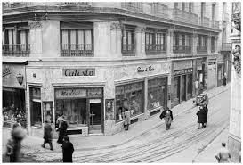
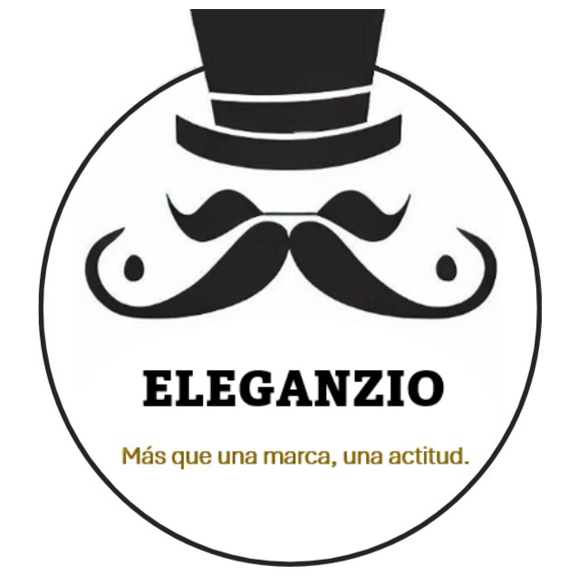

HISTORIA
La historia de Eleganzio es una historia de pasión por la moda y la excelencia en la confección. Comenzó en 1932 en el centro de la Ciudad de México, en la calle de Brasil, con una tienda especializada en trajes para caballero. Durante varias décadas, la tienda se destacó en el arte sartorial gracias a la honestidad, trabajo y cuidado en los detalles de cada prenda.
En 1973, fundamos una sociedad y una fábrica de trajes para caballero, incursionando en la producción a gran escala. A pesar de este cambio, nunca perdimos la calidad y los detalles que caracterizaban a los trajes hechos a medida. Hoy en día, continuamos siendo líderes en el ramo a nivel nacional y exportamos productos de primera calidad a Estados Unidos.
Gracias a esta experiencia familiar, en el año 2000 lanzamos al mercado la marca Eleganzio, abriendo una cadena de 18 tiendas. Hoy contamos con más de 54 sucursales, con presencia en 15 estados de la República Mexicana, convirtiendonos en una de las marcas más importantes de nuestro mercado. El diseño de nuestras tiendas está inspirado en los años 20’s y 30’s, pero con un giro contemporáneo. Utilizan maderas oscuras que remontan a un estilo europeo mediterráneo y elementos decorativos que demuestran su experiencia familiar fabricando ropa de vestir formal.
GIRO
La historia de Eleganzio es una historia de pasión por la moda y la excelencia en la confección. Comenzó en 1932 en el centro de la Ciudad de México, en la calle de Brasil, con una tienda especializada en trajes para caballero. Durante varias décadas, la tienda se destacó en el arte sartorial gracias a la honestidad, trabajo y cuidado en los detalles de cada prenda.